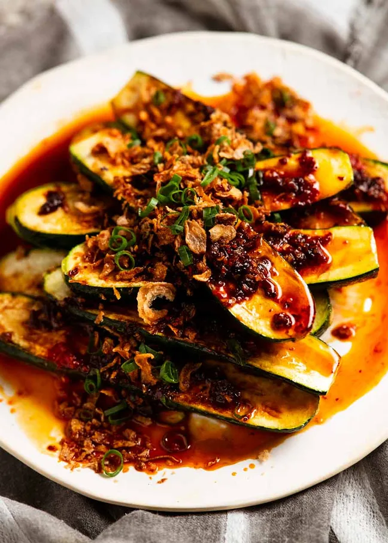

Spicy Asian Zucchini

Description
Here’s a unique zucchini recipe for you – Spicy Asian Zucchini! Meaty zucchini halves seared then smothered with a mild
chilli-garlic sauce. Quick. Easy. Big flavours. Serve as a side or a meat-free main with Garlic Rice.
Ingredients
Zucchini
- 5 Zucchini, small/medium
- 1 tbsp canola oil
- 3/4 tsp cooking/kosher salt
- 1/4 cup crispy fried shallots
- 1 green onion stem
Spicy Sauce
- 1 tbsp canola oil
- 3 garlic cloves
- 1 tbsp sambal oelak
- 1 tbsp sesame oil
- 1 tbsp soy sauce
- 2 tbsp mirin
How to Make
- Toss the zucchini in oil then sprinkle with salt and toss to (roughly) coat all over.
- Cook – Heat a large non-stick pan over medium-high heat. Place half the zucchini cut side down and cook for 3 to 4 minutes until the surface is golden. Turn and cook the skin side for 3 minutes.
Pile onto a serving plate and repeat with remaining zucchini.
- Sauce – cool the pan slightly then return to medium heat. Heat the oil then sauté the garlic until light golden. Add remaining Sauce ingredients, simmer for 30 seconds until syrupy.
- Serve – Pour over zucchini, pile on Crispy Asian Shallots and green onion. Eat!